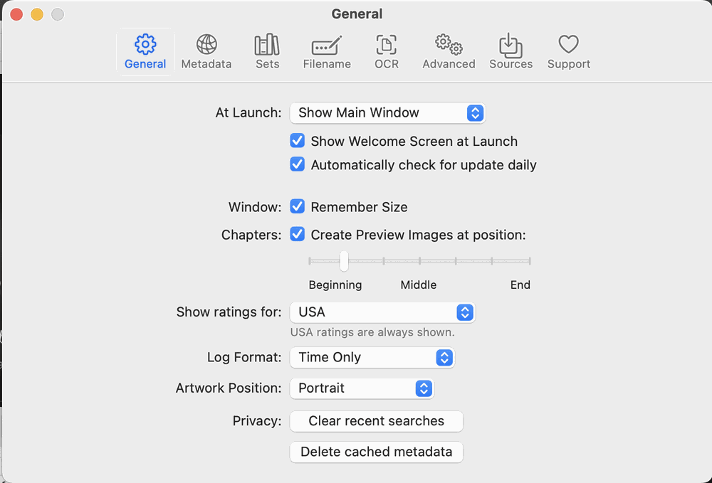

At-launch behavior, whether the window remembers its size, the default artwork position (Portrait or Landscape), chapter preview image position, log format, the ratings region to show (USA ratings are always shown), and privacy actions: Clear recent searches and Delete cached metadata.
